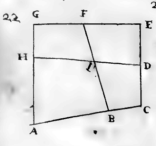

Propositio XX · Problema XI¶



PROP. XX. PROB. XI.
Exposita quinti elementi figura, & ex sex rationibus, de quibus in eodem elemento egimus, datis tribus quibuscunque reliquas duas inuenire.
Problema hoc habet viginti casus; nam multiplicato 6 in 5 fit 30, ex cuius dimidio 15 ducto in 4 fit 60; huius tertia pars est 20, numerus scilicet omnium ternariorum prouenientium ex numero 6.
I. (tab. 2. fig. 22) Sint datae tres rationes CD ad DE, vt 12 ad 8, EF ad FG, vt 4 ad 12, & GH ad HA, vt 8 ad 4; debemus reliquas tres inuestigare. Vt factum est in elemento quinto suspendamus ex angulis C E G A grauia C E G A, ita vt pondera sint inter se reciprocè, vt sunt longitudines ex quibus pendent; Itaque si C ponderabit vt 4, ponderabit E vt 6, quia ED ad DC est, vt 8 ad 12, vel 4 ad 6. Eadem rationem existente E vt 6, erit G vt 2; nam GF ad FE est vt 12 ad 4, seu 6 ad 2; & denique si G fuerit 2 erit A 4; est enim AH ad HG, vt 4 ad 8, imò vt 2 ad 4; quare C erit 4, E 6, G 2, & A 4; est verò (vtpote figura elementi quinti) AB ad BC, vt pondus C 4 ad pondus A 4; ergo AB ad BC erit vt 4 ad 4, videlicet aequalitatis; deindè HI ad ID, vt pondus D 10 ad pondus H 6, hoc est vt 10 ad 6; & pariter BI ad IF, vt graue F 8 ad B 8, nempe vt 8 ad 8, seu aequalitatis, & ideo manifestauimus tres reliquas rationes AB ad BC aequalitatis, quemadmodum BI ad IF, & HI ad ID, vt 10 ad 6, vel 5 ad 3.
II. III. IV. Si verò tres datae rationes fuerint EF ad FG; GH ad HA; AB ad BC: vel GH ad HA; AB ad BC, & CD ad DE: vel AB ad BC; CD ad DE; EF ad FG, eodem modo, vt supra, absoluemus problema.
V. Sint datae tres rationes AB ad BC, vt 5 ad 6; BI ad IF aequalitatis; & GF ad FE, vt 8 ad 3; oporteatque reliquas notificare. Suspendamus ex angulis grauia C E G A, vt docet elementum quintum, erit ergo vt AB ad BC, hoc est vt 5 ad 6, ita graue C ad A; si igitur C pendit 5, A pendet 6. Deindè quia vt FI ad IB, idest, vt 1 ad 1, ita pondus B 11 ad F, erit F quoque 11; est autem GF ad FE, vt 8 ad 3; & componendo GE ad FE, vt 11 ad 3, in
f. 0045 · p. 28qua proportione est etiam pondus F ad G; ergo cum F pendat 11, pendet G 3, & reliquum pondus E 8; itaque statim habentur reliquae, hoc est HI ad ID, vt pondus D 13 ad pondus H 9; itemque AH ad HG, vt graue G 3 ad graue A 6, & denique CD ad DE, vt graue E 8 ad graue C 5.
Quod si tres datae rationes fuerint eaedem quas modò manifestauimus, dabimus reliquas tres eodem modo.
VII. Dentur tres rationes GF ad FE, vt 6 ad 5, HI ad ID, vt 13 ad 9, & FI ad IB, vt 11 ad 11, videlicet aequalitatis, debemus reliquas etiam inuestigare. Quoniam vt GF ad FE, ita pondus E ad G, est verò GF ad FE, vt 6 ad 5; si ergo ponatur pondus E esse 6, erit G 5; deindè quia vt BI ad IF, imò vt 11 ad 11, ita F pondus ad B; estque F 11, ergo B erit pariter 11, quare pondus I erit 22; est autem HI ad ID, vt 13 ad 9; ergo componendo HD ad DI, hoc est pondus I ad H, erit vt 22 ad 9; & ideò cùm pondus I sit 22, erit graue H 9; est autem pondus I 22 aequale ponderibus H 9, & D, igitur D erit 13; similiter quia H 9 est aequale duobus ponderibus G 5, & A; & D 13 aequale duobus ponderibus E 6, & C, erit A 4, & C 7; eritque propterea AB ad BC, vt pondus C 7 ad pondus A 4, GH ad HA, vt pondus A 4 ad pondus G 5, & denique ED ad DC, vt pondus C 7 ad E 6.
VIII. IX. X. Si verò tres datae rationes fuerint AB ad BC, HI ad ID, BI ad IF: vel tres CD ad DE, BI ad IF, & DI ad IH: aut tres GH ad HA, FI ad IB, & HI ad ID; eodem ratiocinio problemati satisfaciemus.
Sint vlterius datae tres aliae rationes GH ad HA, vt 5 ad 17, FI ad IB, vt 7 ad 16, & GF ad FE, vt 15 ad 17, oportet reliquas tres indagare.
Quia, vt GH ad HA, hoc est vt 5 ad 17, ita pondus A ad G, si graue A sit 5, graue G erit 17. Item cum EF ad FG, hoc est 17 ad 15, sit vt pondus G ad E, & pondus G sit 17, pondus E erit 15; & denique, quia BI ad IF, hoc est 16 ad 7; vel 32 ad 14 est vt pondus F ad B, cumque F sit 32, erit B 14; sed B 14 est pondus grauium A 5, & C; ergo C erit 9, atque adeò CD ad DE erit vt pondus E 15 ad pondus C 9; similiter AB ad BC erit vt C 9 ad A 5; & deniquè HI ad ID erit vt D 24 ad H 22.
Septem alij casus huic praedicto similes eodem modo soluuntur.
XIX. (tab. 2. fig. 23) Sint datae rationes GF ad FE, vt 8 ad 9, HI ad ID, vt 15 ad 19, & AB ad BC, vt 7 ad 10. Cauendum tamen est, si tres GE, HD, AC, fuerint parallelae, ne aliae tres GA, FB, EC sint aequidistantes.
Hunc casum resoluemus algebraicè per secundas radices hoc pacto.
Quoniam vt GF ad FE, ita pondus E ad G, si ponatur E ℞ 1, erit G ℞ 1 1/8. Item quia AB ad BC, est vt pondus C ad A, si voluerimus vt C pendat A 1, A pendet A 1 3/7, & quia HI ad ID est vt pondus D ad H, ponitur verò D vt 15, erit H vt 19, verùm quia 19, pondus nimirum H aequatur duobus ponderibus G A, hoc est ℞ 1 1/8 ✠ A 1 3/7; & D aequale est duobus C E, hoc est 15, nimirum ℞ 1 ✠ 1 A; erit vt 19 ad 15, ita ℞ 1 1/8 ✠ A 1 3/7 ad ℞ 1 ✠ 1 A; quare productum ex medijs, aequale erit ei quod ex extremis, nempe ℞ 19 ✠ 19 A aequale erit ℞ 16 7/8 ✠ A 21 3/7; ablatisque communiter ℞ 16 7/8 ✠ 19 A relinquetur aequatio inter ℞ 2 1/8, & A 2 3/7; & si fiat vt A 2 3/7 ad ℞ 2 1/8, ita A 1 ad alium numerum prodibit ℞ 119/136, pretium vnius A, & idcircò ℞ 1 119/136, hoc est ℞ 255/136, aequalis erit numero absoluto 15, aggregato vid. duorum grauium C E, hoc est ℞ 1 ✠ A 1. Diuiso igitur 15 per fractionem 255/136 exit absolutus numerus 2040/255, hoc est 8 pretium vnius radicis, & propterea graue E, quod ponebatur ℞ 1, erit 8; & G erit 9. Deinde quia (vt diximus superius) pondus D aequatur duobus E C, hoc est 15, erit E 8, & C 7, quare A 1 est 7; igitur A nimirùm A 1 3/7 erit 10: quod cum ita sit, erit GH ad HA, vt pondus A 10 ad pondus G 9; CD verò ad DE, vt pondus E 8 ad pondus C 7; & denique FI ad IB, vt B 17 ad pondus F 17, quod erat &c.
vltimò. Si datae rationes fuerint GH ad HA, FI ad IB, & ED ad DC, supposita figura, vt dictum est, erit hic casus similis praecedenti XIX., atque adeo tres reliquas, simili artificio, aperiemus.